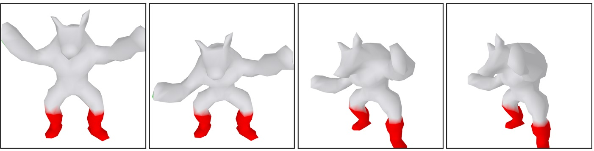
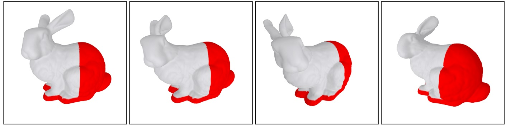
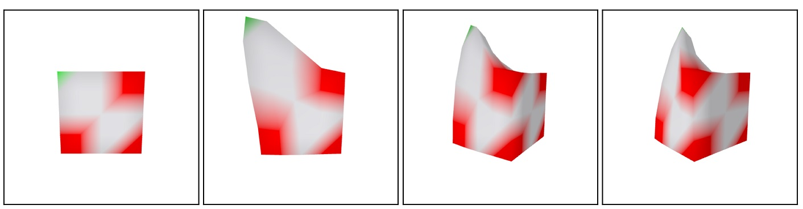
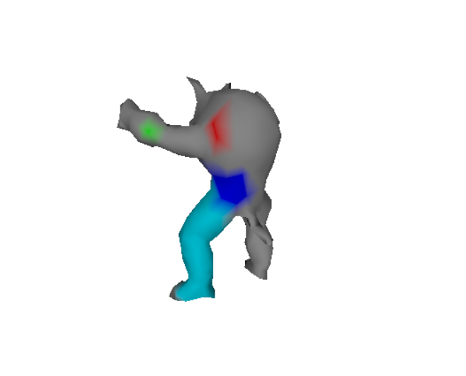
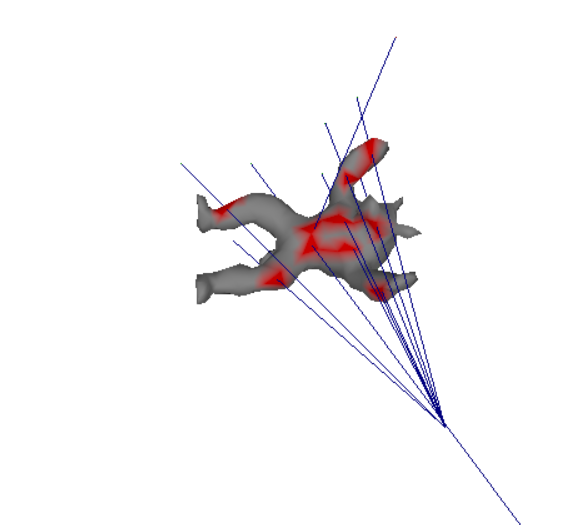
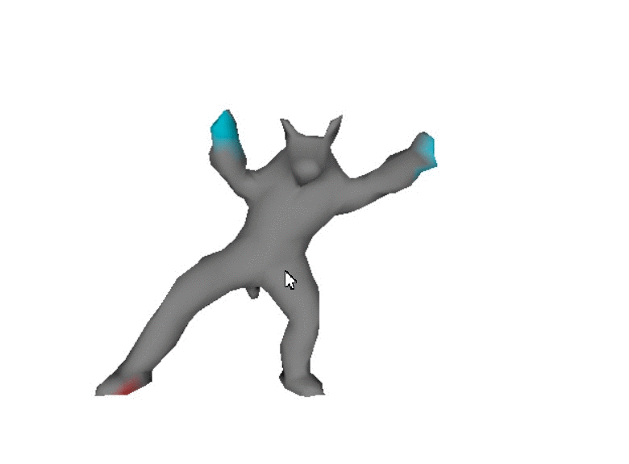
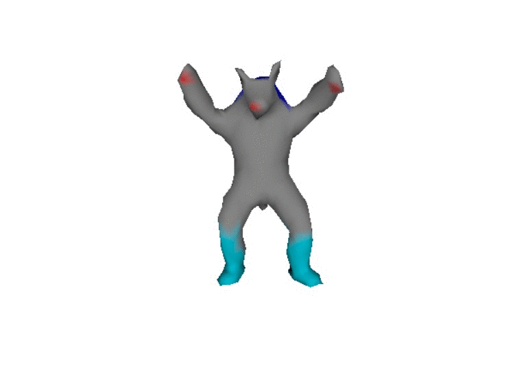

This project was made with .. as part of a team project for the Acquisition and Processing of 3D Geometry module at UCL.



This project implements the As-Rigid-As-Possible (ARAP) mesh deformation method presented by Sorkine and Alexa (2007).
This framework tries to minimize non rigid transformations between overlaping cells of the mesh. Mathematically, it translates to minimizing the following equation:
\[E(S') = \sum_i^{n} \sum_{j \in N(i)} w_{ij} || (\mathbf{p}_i^{'}-\mathbf{p}_j^{'}) - \mathbf{R}_i (\mathbf{p}_i - \mathbf{p}_j) ||^{2} .\]
Where prime indicates deformed mesh variables, \(\mathbf{p}\) are the vertices positions and \(\mathbf{R}_i\) are the rotations between the cells.
It is a bit of a mouthfull but for every vertex, we try to minimize its one-ring neighbor deformation. ARAP divides this problem
in two steps: find the deformed mesh position, and find the correct rotation. This makes the algorithm rotation invariant and very
to implement. It's main limitation is that it does not scale well to large meshes. I won't go in more details here but make sure to read the paper
for the full description!


We also developed a User Interface (UI) which enables the user to interact and deform the mesh. We extended the pyrender Viewer class
to enable vertex selection through mesh traversal. The couloured vertices you see here represent the fixed vertices and handles the
user can move. The first iterations of our project used keys to traverse the mesh, which can be a tedious. I further extended our UI
to include a raycast system which enables the user to select vertices using the mouse.
Once we had both an operational deformation algorithm and UI, we were only one step away from creating our own animations! All credit
is given to .. here, as she devised a way to record and interpolate between vertex positions and run the deformation for all those poses.
Here are some of the results:

